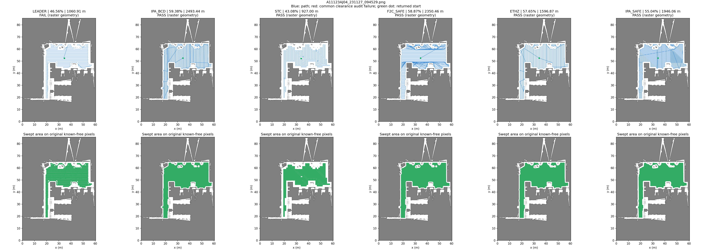
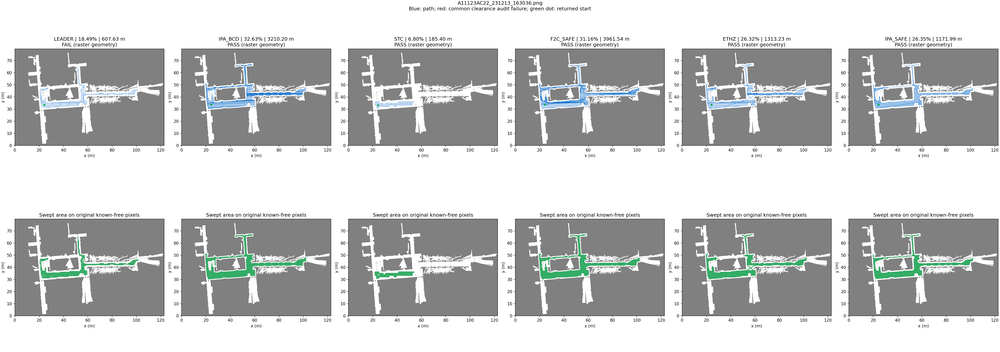
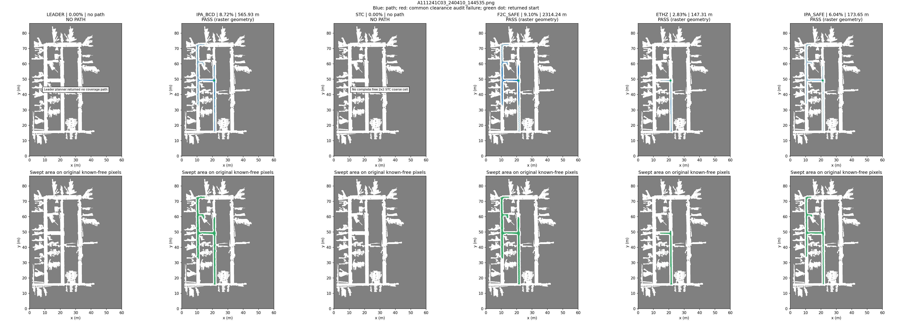

2026-11-03 · 三图 × 六算法 · 全部重新调用，共 18 组 · 0.05 m / 0.6 m 作业宽 / 1 m 净空 · 未执行运动
无效路径的覆盖率仅为名义扫掠值。各算法内部范围、粗化及回程约束不同；详见完整说明。
| 算法 / 完整路线 JSON | 覆盖率 | 路径长度 | 共同几何有效性 |
|---|---|---|---|
| Leader | 46.5613% | 1,060.91 m | 不通过（名义覆盖率） |
| IPA BCD＋安全连接 | 59.3848% | 2,493.44 m | 通过 |
| Spiral-STC | 43.0781% | 927.00 m | 通过 |
| Fields2Cover＋安全连接 | 58.8749% | 2,350.46 m | 通过 |
| ETHZ BCD＋GTSP | 57.6468% | 1,596.87 m | 通过 |
| IPA Local Energy＋A* | 55.0446% | 1,946.06 m | 通过 |
点击图打开原尺寸，浏览器可继续放大。

| 算法 / 完整路线 JSON | 覆盖率 | 路径长度 | 共同几何有效性 |
|---|---|---|---|
| Leader | 18.4931% | 607.63 m | 不通过（名义覆盖率） |
| IPA BCD＋安全连接 | 32.6348% | 3,210.20 m | 通过 |
| Spiral-STC | 6.8023% | 185.40 m | 通过 |
| Fields2Cover＋安全连接 | 31.1626% | 3,961.54 m | 通过 |
| ETHZ BCD＋GTSP | 26.3248% | 1,313.23 m | 通过 |
| IPA Local Energy＋A* | 26.3451% | 1,171.99 m | 通过 |
点击图打开原尺寸，浏览器可继续放大。

| 算法 / 完整路线 JSON | 覆盖率 | 路径长度 | 共同几何有效性 |
|---|---|---|---|
| Leader | 0.0000% | — | 规划失败 |
| IPA BCD＋安全连接 | 8.7178% | 565.93 m | 通过 |
| Spiral-STC | 0.0000% | — | 规划失败 |
| Fields2Cover＋安全连接 | 9.1025% | 2,314.24 m | 通过 |
| ETHZ BCD＋GTSP | 2.8335% | 147.31 m | 通过 |
| IPA Local Energy＋A* | 6.0414% | 173.65 m | 通过 |
点击图打开原尺寸，浏览器可继续放大。

原生日志在 evidence/ 下。旧 Richey BCD 和两个已删除混合变体未参与。